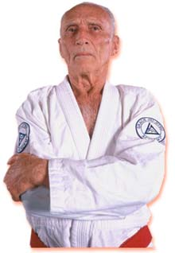

HISTORIA DE ASG JIUJITSU
El JiuJitsu nace en la India, como un metodo de defensa sin armas utilizado por los monjes budistas
para
protegerse de ladrones y demas peligros durante sus travesias. En estos viajes, el Jiu Jitsu llega
al
Japon,
donde es perfeccionado y adoptado por los samurais como metodo de defensa sin armas.
Este antiguo Jiu Jitsu japones, llega a Brasil a principios del siglo XX, por medio de Esai
Maeda,
mas
conocido como “Conde Koma” (“Conde del Combate”) quien lideraba una comitiva de comercio Japones
con
el estado de Pará, en el norte brasileño.
Maeda conoce alli a Gastao Gracie, un influyente miembro de la comunidad, de ascendencia
escocesa,
quien les brinda ayuda.
En forma de gratitud, Maeda le enseña al primogenito de Gastao, Carlos, el arte del Jiu Jitsu.
Carlos, a su
vez, les enseña a sus hermanos, excepto al menor, Helio, quien sufria de problemas fisicos ligados a
su
debil contextura.
Sin embargo, es Helio quien seria el encargado de llevar al Jiu Jitsu a un nuevo nivel, pues es el,
quien lo
reformula, maximizando el uso de las palancas y los estrangulamientos, permitiendo que hasta los mas
debiles
se beneficiaran con la practica del Jiu Jitsu, este fue el nacimiento de lo que hoy conocemos como
Gracie
Jiu Jitsu, o Brazilian Jiu Jitsu.
Durante su juventud, Helio participo en el conocido “Desafio Gracie”, donde se enfrento con los mas
peligrosos peleadores callejeros de su epoca, derrotandolos con facilidad, demostrando la eficiencia
de su
arte.
